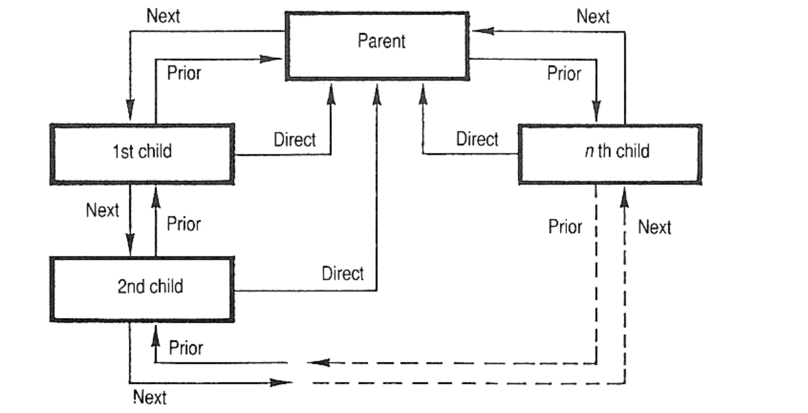
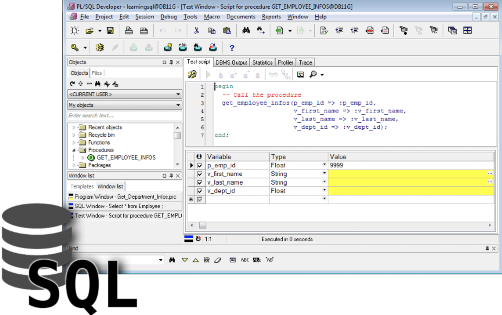
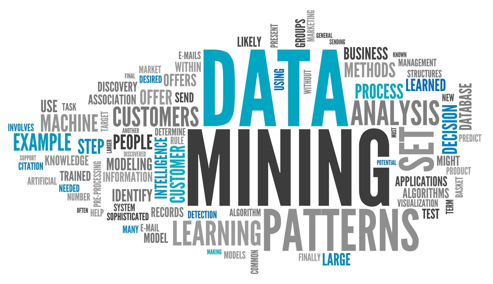
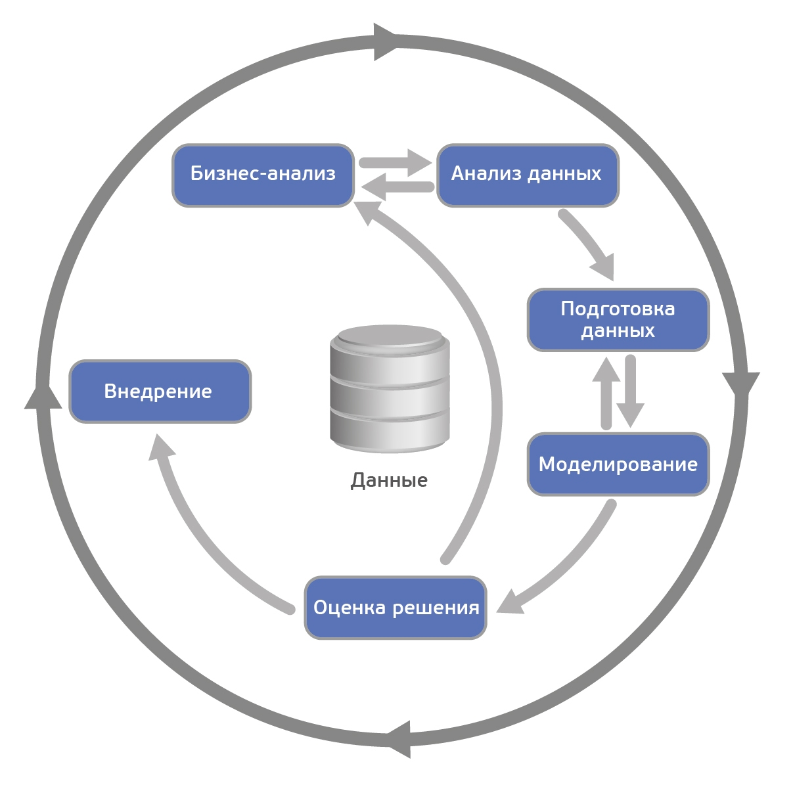
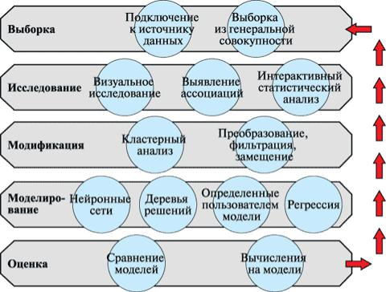

Data Mining
Студент ИОПС-23м
Определение
Data Mining - мультидисциплинарная область, возникшая и развивающаяся на базе таких наук как прикладная статистика, распознавание образов, искусственный интеллект, теория баз данных и др
История
1960-е гг.
1975 год
1986 год
1990-е гг.
2000-е гг.

Сейчас
Понятия
Data Mining - это процесс поддержки принятия решений, основанный на поиске в данных скрытых закономерностей (шаблонов информации)
Data Mining - это процесс обнаружения в сырых данных ранее неизвестных, нетривиальных, практически полезных и доступных интерпретации знаний, необходимых для принятия решений в различных сферах человеческой деятельности.
Data Mining как часть рынка технологий

- Cредства построения хранилищ данных
- Cистемы оперативной аналитической обработки
- Информационно-аналитические системы
- Средства интеллектуального анализа данных
- Инструменты для выполнения запросов и построения отчетов
Проблемы DM
- Data Mining не может заменить аналитика
- Технология не может дать ответы на те вопросы, которые не были заданы
- Сложность разработки и эксплуатации приложения Data Mining
- Необходимо задействовать специалистов из разных областей
Сферы применения
- Бизнес и маркетинг
- Финансы
- Медицина
- Наука и исследования
- Телекоммуникации
Бизнес и маркетинг
- Анализ клиентской базы и сегментация
- Прогнозирование спроса и управление запасами
- Оптимизация маркетинговых кампаний
- Персонализация предложений
- Анализ социальных сетей
Финансы
- Управление рисками
- Обнаружение мошенничества
- Прогнозирование рынка
- Управление портфелем
Медицина
- Диагностика заболеваний
- Прогнозирование заболеваний
- Персонализированная медицина
- Оптимизация работы медицинских учреждений
Наука и исследования
- Геномика
- Климатология и экология
- Астрономия
- Социальные науки
- Физика
Телекоммуникации
- Улучшение обслуживания клиентов
- Оптимизация сетей
Стандарты Data Mining
Основные стандарты:
- CRISP-DM
- SEMMA
- PMML
- Стандарты, относящиеся к унификации интерфейсов (CWM, JDM)
- Стандарт SQL/MM
- The OLE DB for Data Mining standard of Microsoft
CRISP-DM
SEMMA
Sample, Explore, Modify, Model, Assess
PMML
Predictive Model Markup Language
Это стандарт, разработанный Data Mining Group (DMG) для описания статистических и Data Mining моделей
PMML
- описание анализируемых данных (структура и типы данных)
- описание схемы анализа (используемые поля данных)
- описание трансформаций данных (например, преобразования типов данных)
- описание статистик, прогнозируемых полей и самих прогнозных моделей
CWM
Common Warehouse Metamodel (CWM) — это стандарт, разработанный Object Management Group (OMG) для унификации метаданных, используемых в хранилищах данных и Data Mining
JDM
Java Data Mining (JDM) — это стандарт, разработанный Java Community Process (JCP) в рамках Java Specification Request 73 (JSR-73). Он предоставляет стандартный Java API для получения доступа к инструментам Data Mining из Java-приложений
SQL/MM
SQL/MM (SQL Multimedia and Application Packages) — это стандарт, разработанный ISO/IEC для расширения возможностей SQL в работе с мультимедийными данными и специализированными приложениями
The OLE DB for Data Mining of Microsoft
The OLE DB for Data Mining — это стандарт, разработанный Microsoft для интеграции методов Data Mining в структуру реляционных баз данных. Этот стандарт является расширением технологии OLE DB и предоставляет интерфейсы для создания, управления и использования моделей Data Mining.